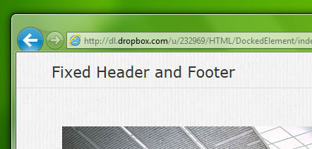
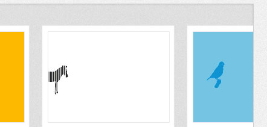
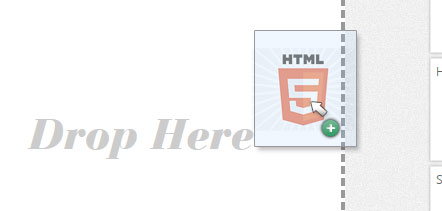
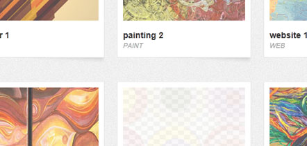
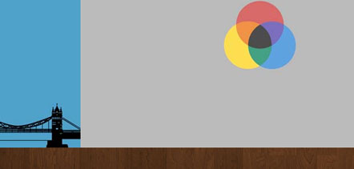
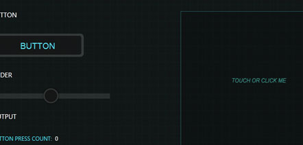

Fixed Position Menu

Full Screen Fixed Header and Footer
Dom Scroller

Touch-enabled inertial scroller for broad use
Drag and Drop

File System and native Drag and Drop Sample
Lazy Load

Lazy load heavy page conent for snappier load time
Parallax Scroller

Touch-enabled parallax scroller for use with HTML5 canvas
Sprites
Sprite class intended for use on a HTML5 canvas
Touch Sample

3 Approaches to touch-enabling HTML elements
Transitions
Animated transition plumbing for navigating between pages